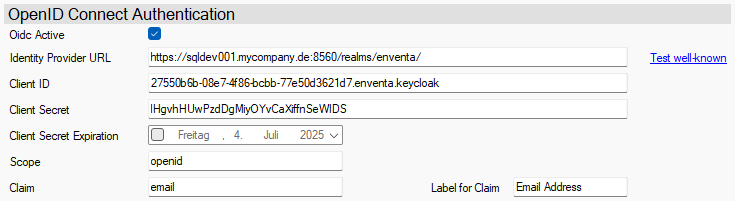

OpenID Connect mit Keycloak
Keycloak ist ein Open-Source-Identity-Provider, der OpenID Connect (OIDC), OAuth 2.0 und SAML 2.0 unterstützt.
Keycloak arbeitet hierbei mit User-Federation und Identity Brokering, was bedeutet, dass Keycloak die Nutzer verwaltet, aber zur Identifizierung ein oder mehrere Identity-Provider verwenden kann.
Der Benutzer hat dann eine Auswahl, mit welchem IdP er sich anmelden möchte.
Link zur offiziellen Keycloak Doku und der Administrations Doku.
Das folgende Bild zeigt beispielhaft die Konfiguration eines Authentication-Service für Keycloak:

Einrichtung
Die Einrichtung von Keycloak ist komplex, deshalb wird hier nicht jeder notwendige Schritt dokumentiert. Dies soll lediglich eine Hilfestellung für die Nutzung mit OIDC sein.
Realm erstellen (falls noch nicht vorhanden)
- Melden Sie sich im Keycloak Admin UI an.
- Wählen Sie oben links „Master“ aus → „Realm hinzufügen“.
- Geben Sie einen Namen ein (z. B. myrealm).
Weiterführende Infos zu Realms in Keycloak
Client erstellen
- Navigieren Sie im Admin UI zu „Clients“
- Klicken Sie auf „Create“
- Geben Sie eine Client-ID ein (z. B. myclient oder eine Guid)
- Wählen Sie:
- Client Type: OpenID Connect
- Client Protocol: openid-connect
- Klicken Sie auf „Save“
Weiterführende Infos zur Client-Registrierung in Keycloak
Client konfigurieren
Wichtige Einstellungen, die für den Client gemacht werden müssen:
Tab Settings
- Access settings:
- Valid redirect URIs:
http://localhost/login-callback - Web origins: eventuelle kann entfernt werden
- Valid redirect URIs:
- Capability config:
- Client authentication: On (wichtig für das Client-Secret)
- Authentication flow
- Standard Flow Enabled: ON (für Authorization Code Flow)
- Implicit Flow Enabled: OFF (nicht empfohlen)
- Direct Access Grants: ON, wenn Username/Password direkt genutzt wird
Tab Credentials
Dieser Tab wird nur angezeigt wenn die Client authentication aktiviert ist.
- Client Authenticator: Client Id and Secret
- Client Secret muss gefüllt sein (kann zu jeder Zeit kopiert werden)
Tab Advanced
- OpenID Connect Compatibility Modes:
- Use refresh tokens: kann aktiviert werden, wenn man den Refresh-Flow nutzen möchte
- Advanced settings
- Proof Key for Code Exchange Code Challenge Method: S256
Weiterführende Infos zur Client Konfiguration
Relevante Hinweise
IdP URL
Nutzen Sie für die Einrichtung als IdP URL https://{host}/realms/{realm-name}/.
Ersetzen Sie {host} durch die Adresse des Servers auf dem Ihr Keycloak Service läuft.
Ersetzen Sie {realm-name} durch den Namen des von Ihnen definierten Realms.
Claims
Claims können in Keycloak selbst definiert werden, aber der Claim email steht standardmäßig zur Verfügung.
Scopes
Damit OIDC korrekt funktioniert muss als Scope openid angegeben werden.
Beachten Sie hierbei auch die Keycloak Scopes Dokumentation.
Weiterführende Links
Weiterführende Links